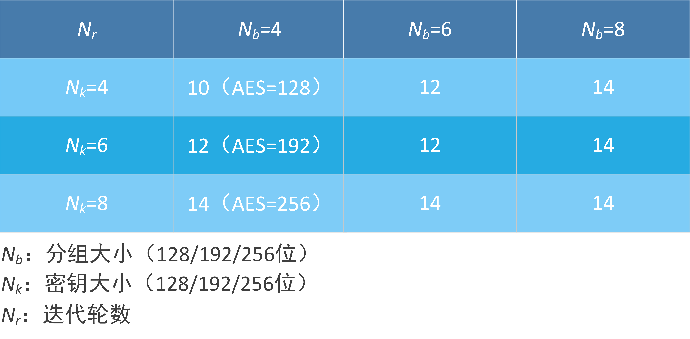
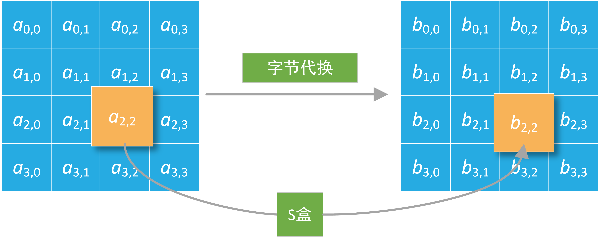
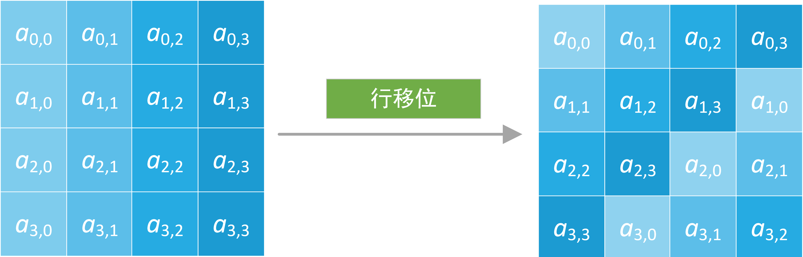
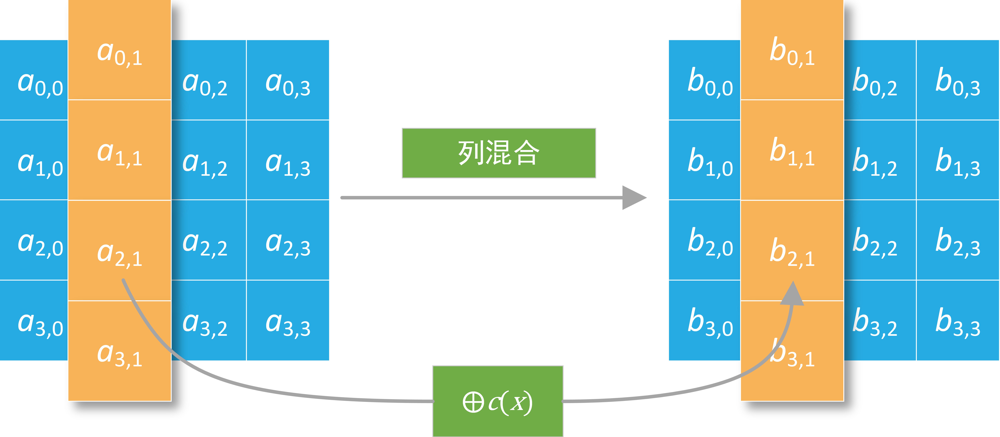
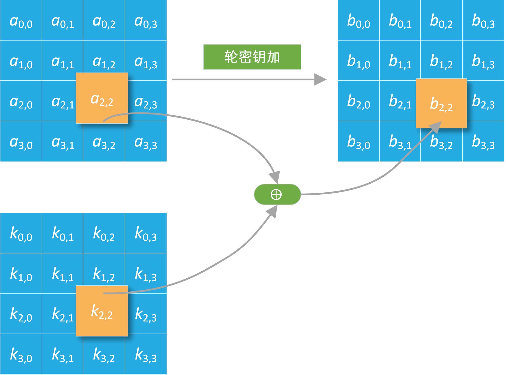
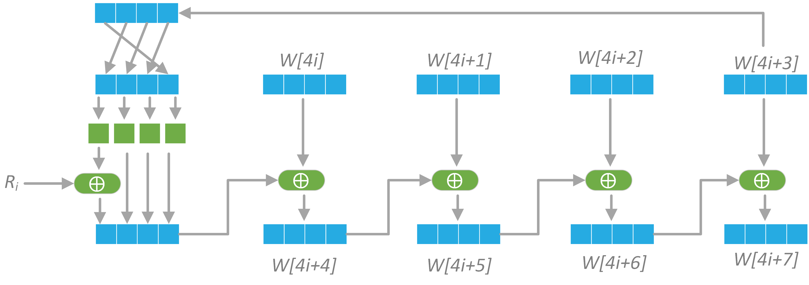

数缘科技 - AES密码算法
AES算法实验说明
本实验支持自定义明密文和密钥进行
对于PC端进行加密，本实验可显示加密过程中关键步骤的中间值；对于智能卡加密，本实验支持在已定义明文和密钥的情况下，一键与智能卡进行通信并获取加密结果的方式，也支持通过手动输入APDU指令（智能卡读卡器和智能卡之间传送的信息单元，将在“智能卡通信介绍”一节进行介绍）与智能卡通讯的方式。这几种情景同样适用于AES解密。
以下为本实验的重要提示：
- 连接智能卡：本实验用到的智能卡为“
教学卡2：AES算法 ”，需要通过读卡器连接电脑和智能卡。具体做法是：将智能卡读卡器的USB插口插入电脑的USB接口，并将智能卡插入读卡器中。 - 密钥输入：AES加解密密钥相同，可通过交互栏的“Key (Hex)”文本框输入。
- 明密文输入：若进行AES加密，则密钥和明文是必需的，明文可通过“Plaintext (Hex)”文本框输入；若进行AES解密，则密钥和密文是必需的，密文可通过“Ciphertext (Hex)”文本框输入。
- PC端加解密：交互栏部分包含一个“Encrypt (PC)”按钮和一个“Decrypt” (PC)按钮，两者分别对应PC端的AES加密和PC端的AES解密。在加解密过程中，可以切换到“Intermediate Value”页面，查看加解密过程关键步骤的中间值。
- 智能卡加解密：我们可通过两种方式进行智能卡的加解密：既可以通过点击“Encrypt (Card)”按钮或“Decrypt (Card)”按钮直接获取加解密结果，也可以切换到“Smart Card”页面，通过手动输入APDU指令进行智能卡通讯，这部分我们将在“AES示例卡说明”一节进行详细介绍。
- 数据格式：软件右侧交互栏部分可以进行AES明密文和密钥的输入。本实验中支持128比特的AES加解密，明密文、密钥以及中间值均为
16字节 数据。注意请以16进制 的格式进行输入，并在每个字节之间加入一个空格作为分隔符。明密文和密钥输入框内已填入默认值，可参考默认值进行设置。
智能卡通信介绍
智能卡读卡器和智能卡之间传送的信息单元为APDU（Application Protocol Data Unit）指令，APDU指令的规范依据
CLA |
INS |
P1 |
P2 |
[Lc/Le] |
[Data] |
其中CLA为指令类别；INS为指令码；P1、P2为参数；Lc为Data的字节数；Data为数据部分；Le为希望响应时回答的数据字节数。其中LC、Data、Le为可选命令，指令的每个部分都需要遵循一定的规范，比如INS=88通常指内部认证、INS=82通常指外部认证。
[Data] |
SW1 |
SW2 |
这里的Data为智能卡返回的数据，其长度与Command APDU中Le相等，SW1和SW2为智能卡数据处理的状态标志，我们可以根据状态标志判断智能卡内数据处理的情况。
AES示例卡说明
下面我们对AES示例卡的APDU指令进行说明，AES示例卡的Command APDU如下：
CLA |
INS |
P1 |
P2 |
Lc/Le |
Data |
功能 |
00 |
11 |
00 |
00 |
20 |
10字节密钥+10字节明文 |
AES加密 |
00 |
11 |
00 |
01 |
20 |
10字节密钥+10字节密文 |
AES解密 |
00 |
C0 |
00 |
00 |
10 |
读取AES加/解密结果 |
注：上表中的数字均为16进制表示。
Response APDU的SW1、SW2我们定义如下：
SW1 |
SW2 |
状态 |
90 |
00 |
成功 |
61 |
xx |
有“xx”字节数据可读取 |
6E |
00 |
CLA错误 |
6D |
00 |
INS错误 |
6B |
00 |
P1或P2错误 |
67 |
00 |
Lc或Le错误 |
注：上表中的数字均为16进制表示。
我们以加密为例对卡内的指令进行说明，用Key表示密钥，plaintext表示明文，令：
Key =
Plaintext =
那么我们要发送的APDU指令为
当智能卡内程序正确时，卡会返回
学员可切换至“Smart Card”页面，尝试与智能卡发送指令以进行学习。此处需要注意，当插入我们配套的读卡器后，右侧交互栏的读卡器列表将有一项值为“ACS ACR1281 1S Dual Reader ICC 0”的元素，选择该项，然后在“Smart Card”页面的“Command (Hex)”文本框内输入命令，并点击“Send”按钮，即可发送APDU指令给智能卡。智能卡的返回数据将显示在“Receive (Hex)”文本框内。
AES算法的历史
AES（Advanced Encryption Standard）其实是一套标准：FIPS197。NIST（National Institute of Standards and Technology）在1997年9月12日公开征集更高效更安全的替代DES加密算法，第一轮共有15种算法入选，其中5种算法入围了决赛，分别是MARS、RC6、Rijndael、Serpent和Twofish。又经过3年的验证、评测及公众讨论之后Rijndael算法最终入选。
Rijndeal算法
Rijndael算法是由比利时学者Joan Daemen和Vincent Rijmen所提出的，算法的名字就由两位作者的名字组合而成。Rijndael的优势在于集安全性、性能、效率、可实现性及灵活性与一体。
- AES与Rijndeal
- Rijndeal总体结构
Rijndael算法支持多种分组及密钥长度，介于128-256之间所有32的倍数均可，最小支持128位，最大256位，共25种组合。而AES标准支持的分组大小固定为128位，密钥长度有3种选择：
Rijndael算法是基于代换-置换网络（SPN，Substitution-permutation Network）的迭代算法。明文数据经过多轮次的转换后方能生成密文，每个轮次的转换操作由轮函数定义。轮函数任务就是根据密钥编排序列（即轮密码）对数据进行不同的代换及置换等操作。

图1 Rijndeal加密结构
图1左侧为轮函数的流程，主要包含4种主要运算操作：
AES标准算法将128位的明文，以特定次序生成一个4x4的矩阵（每个元素是一个字节，8位），即初始状态（state），经由轮函数的迭代转换之后又将作为下一轮迭代的输入继续参与运算直到迭代结束。
Rijndael算法支持大于128位的明文分组，所以需要列数更多的矩阵来描述。Rijndael轮函数的运算是在特殊定义的有限域 $\mathrm{GF}(256)$ 上进行的。有限域（Finite field）又名伽罗瓦域（Galois field），简而言之就是一个满足特定规则的集合，集合中的元素可以进行加减乘除运算，且运算结果也是属于此集合。更详细有有关Rijndael算法的数学描述，可以参阅推荐教材，在此不做赘述。
轮函数
我们已经得知轮函数主要包含4种运算，但不同的运算轮所做的具体运的算组合并不相同。主要区别是初始轮（Round: 0）和最后一轮（Round: $N_{r}$ ），所有中间轮的运算都是相同的，会依次进行4种运算，即：
- 字节代换（SubByte）
- 行移位（ShiftRow）
- 列混合（MixColumn）
- 轮密钥加（AddRoundKey）
根据Rinjdael算法的定义，加密轮数会针对不同的分组及不同的密钥长度选择不同的数值：

图2 加密轮数
AES标准只支持128位分组（$N_{b}=4$）的情况。
Enrique Zabala创建了一个AES-128加密算法的动画演示，清楚、直观地介绍了轮函数执行的过程，文件位于“/Resource/Demo/AES演示动画.swf”，可以使用视频播放器打开文件。
- 字节代换（SubByte）
- 行移位（ShiftRow）
- 列混合（MixColumn）
- 轮密钥加（AddRoundKey）
字节代换是对state矩阵中的每一个独立元素于置换盒（Substitution-box，S盒）中进行查找并以此替换输入状态的操作。字节代换是可逆的非线性变换，也是AES运算组中唯一的非线性变换。字节代换逆操作也是通过逆向置换盒的查找及替换来完成的。

图3 字节代换
S盒是事先设计好的16×16的查询表，包含256个元素。其设计不是随意的，要根据设计原则严格计算求得，不然无法保证算法的安全性。既然是S盒是计算得来，所以字节代换的操作完全可以通过计算来完成，不过通过S盒查表操作更方便快捷，图中所示就是通过S盒查找对应元素进行的替换操作。S-box与 $\mathrm{GF}\left(2^{8}\right)$ 上的乘法反元素有关，已知具有良好的非线性特性, 是AES运算组中唯一的非线性变换。字节代换逆操作也是通过逆向置换盒的查找及替换来完成的。
为了避免简单代数性质的攻击，S-box结合了乘法反元素及一个可逆的仿射变换矩阵建构而成。此外在建构S-box时，刻意避开了固定点与反固定点，即以S-box替换字节的结果会相当于错排的结果。

图4 S盒

图5 行移位
行移位描述矩阵的行操作。在此步骤中，每一行都向左循环位移某个偏移量。在AES中（区块大小128位），第一行维持不变，第二行里的每个字节都向左循环移动一格。同理，第三行及第四行向左循环位移的偏移量就分别是2和3。128位和192比特的区块在此步骤的循环位移的模式相同。经过行移位之后，矩阵中每一竖列，都是由输入矩阵中的每个不同列中的元素组成。Rijndael算法的版本中，偏移量和AES有少许不同；对于长度256比特的区块，第一行仍然维持不变，第二行、第三行、第四行的偏移量分别是1字节、2字节、3字节。除此之外，行移位操作步骤在Rijndael和AES中完全相同。

图6 列混合
在列混合步骤，每一列的四个字节透过线性变换互相结合。每一列的四个元素分别当作 $1, x, x^{2}, x^{3}$ 的系数，合并即为 $\mathrm{GF}\left(2^{8}\right)$ 中的一个多项式，接着将此多项式和一个固定的多项式 $c(x)=3 x^{3}+x^{2}+x+2$ 在模 $x^{4}+1$ 下相乘。此步骤亦可视为Rijndael有限域之下的矩阵乘法。列混合函数接受4个字节的输入，输出4个字节，每一个输入的字节都会对输出的四个字节造成影响。因此行移位和列混合两步骤为这个密码系统提供了扩散性。

图7 轮密钥加
密钥扩展算法（Key Expansion）
密钥扩展算法是Rijndael的密钥编排实现算法，其目的是根据种子密钥（用户密钥）生成多组轮密钥。轮密钥为多组128位密钥，对应不同密钥长度，分别是11，13，15组。

图8 密钥扩展算法
在每次的加密循环中，都会由主密钥产生一个轮密钥（通过Rijndael密钥生成方案产生），这个密钥大小和原矩阵一样，以与原矩阵中每个对应的字节作异或。
解密轮函数
对Rijndael算法来说解密过程就是加密过程的逆向过程，只不过需要注意轮密钥的使用与加密是相反的。
算法设计思想
- 加密算法的一般设计准则
- 混淆：最大限度地复杂化密文、明文与密钥之间的关系，通常用非线性变换算法达到最大化的混淆。
- 扩散：明文或密钥每变动一位将最大化地影响密文中的位数，通常采用线性变换算法达到最大化的扩散。
- AES评判要求
- 分组加密算法：支持128位分组大小，128/192/256位密钥。
- 安全性不低于3DES，但实施与执行要比3DES的更高效。
- 优化过的ANSIC的实现代码。
- KAT（Known-Answertests）及MCT（MonteCarloTests）测试及验证。
- 软件及硬件实现的便捷。
- 可抵御已知攻击。
- Rijndael设计思想
- 安全性（Security）算法足够强，抗攻击。
- 经济性（Efficiency）算法运算效率高。
- 密钥捷变（KeyAgility）更改密钥所引入的损失尽量小，即最小消耗的密钥扩展算法。
- 适应性（Versatility）适用于不同的CPU架构，软件或硬件平台的实现。
- 设计简单（Simplicity）轮函数的设计精简，只是多轮迭代。
- S盒设计
扩散(diffusion)和混淆(confusion)是C.E. Shannon提出的设计密码体制的两种基本方法，其目的是为了抵抗对手对密码体制的统计分析。在分组密码的设计中，充分利用扩散和混淆，可以有效地抵抗对手从密文的统计特性推测明文或密钥。扩散和混淆是现代分组密码的设计基础。
NIST在征集算法的时候就提出了几项硬性要求：
Rijndael的优势在于集安全性、性能、效率、可实现性及灵活性与一体，其主要设计思想如下：
S盒是由一个有限域 $\mathrm{GF}(256)$ 上的乘法求逆并串联线性仿射变换所构造出来的，不是一个随意构造的简单查询表。因其运算复杂，众多的AES软件及硬件实现直接使用了查找表（LUP,Look-uptable），但查询表的方式并不适合所有场景，针对特定的硬件最小化面积设计需求，则要采用优化的组合逻辑以得到同价的S盒替换。